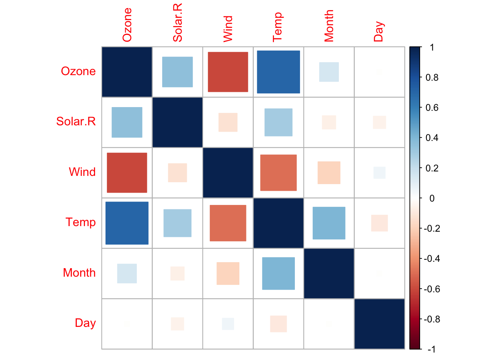
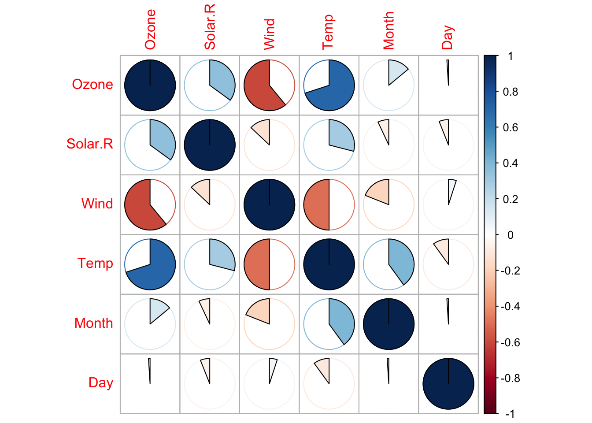
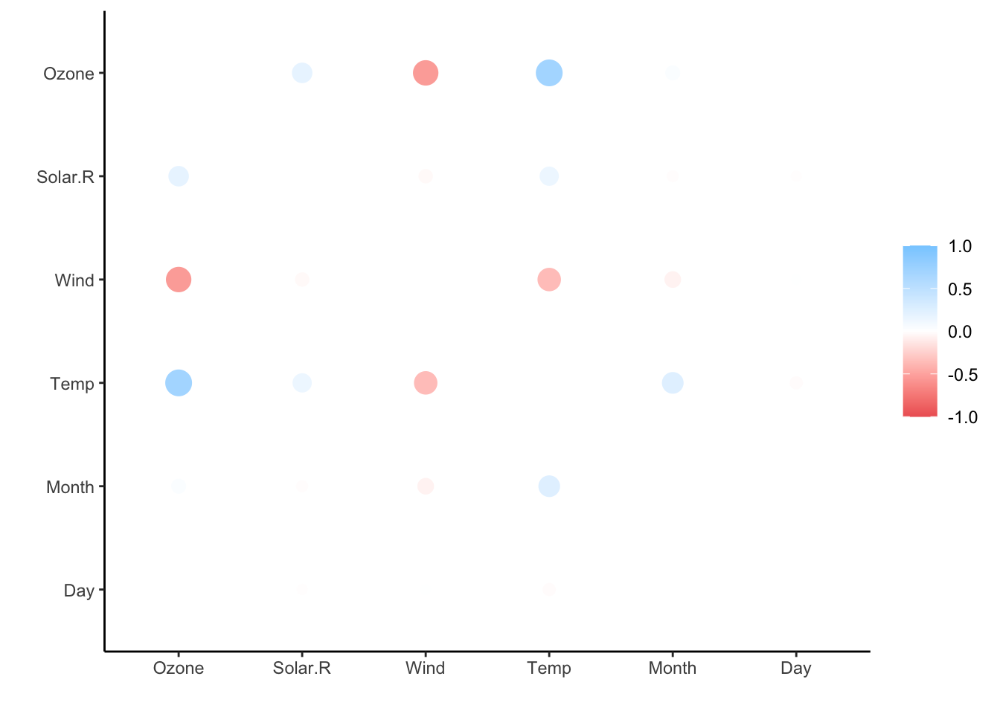
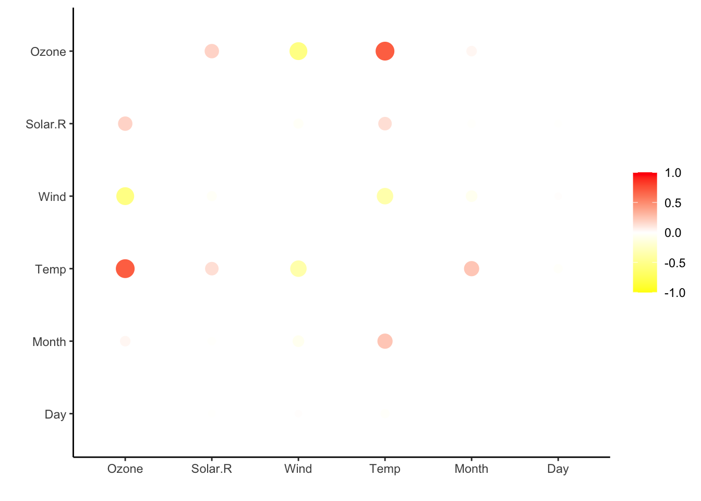
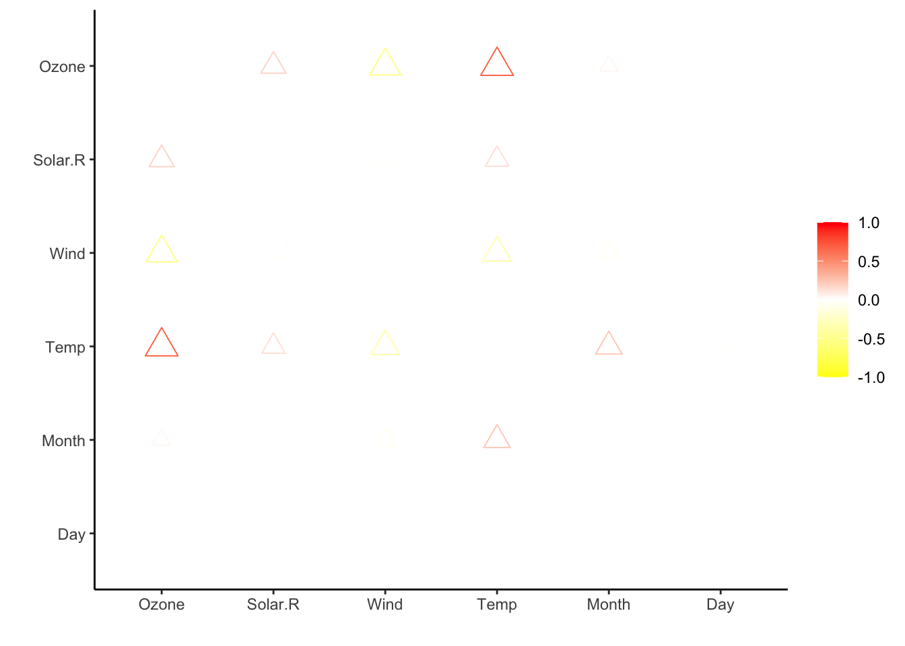
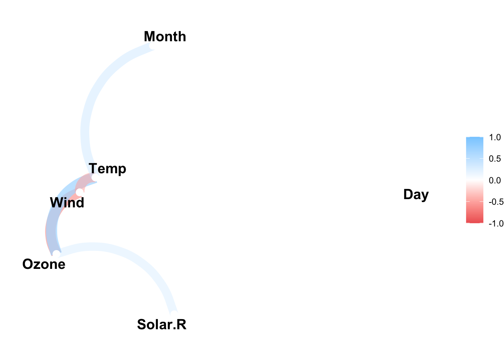
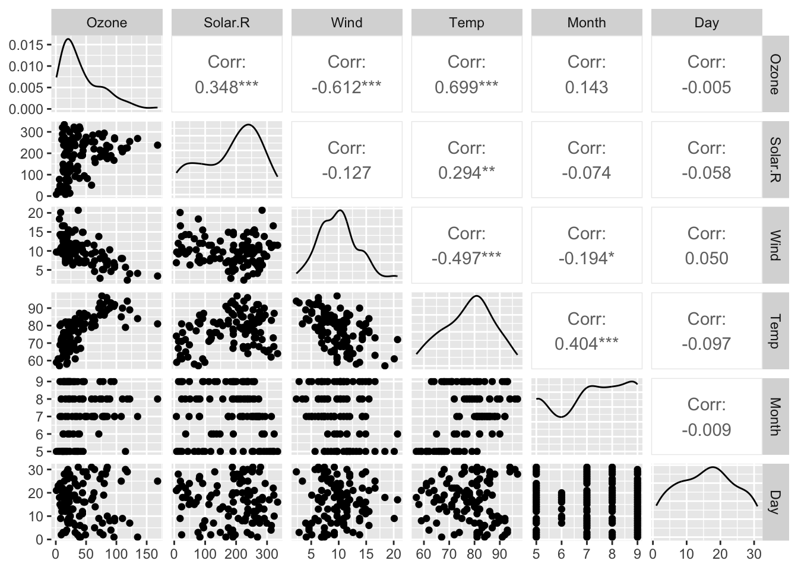
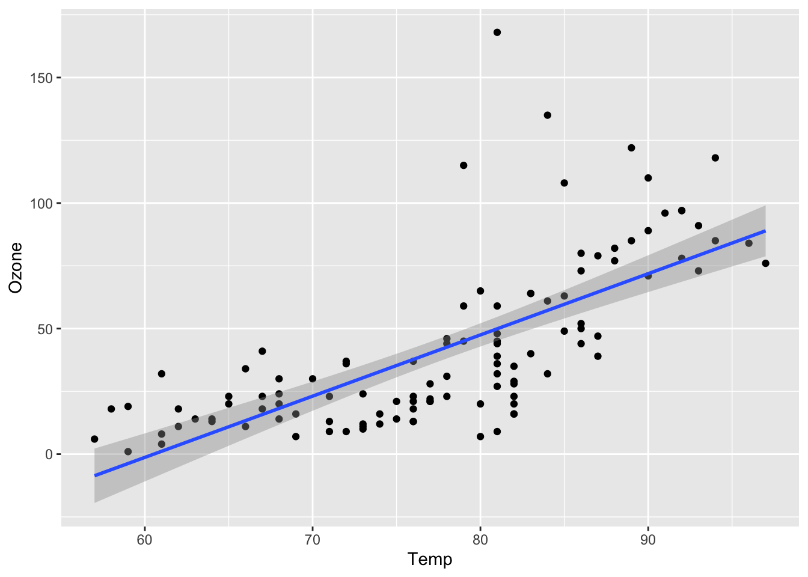
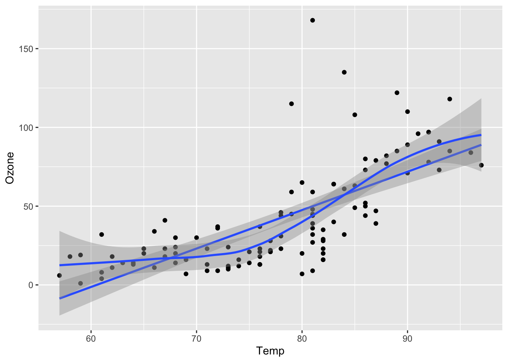

1 Correlaciones y graficos con correlaciones
library(corrplot) # paquete para crear gráficos de correlaciones
library(corrr) # para usar la función correlate
library(ggcorrplot) # paquete para crear gráficos de correlaciones
library(tidyverse) # Caraga contiene varias funciones y ggplot2, al cargarlo se cargan todas. Si solo se desea usar ggplot 2, puede cargarse por separado
library(GGally) # para usar la función ggcorr()
library(visreg) # paquete para hacer una exloración inicial de los datos
library(DataExplorer) #Para usar la función plot_missing
library(visdat)Traemos un set de datos para trabajar
vis_data permite rápidamente identificar la cantidad de NA, pero además, hace una clasificación de tods los tipos de variables presentes en los datos.


La función cor viene por defecto en R, no se requiere de paquete alguno. Algunos paquetes trabajan la correlación, pero con otras herramientas adicionales
## Ozone Solar.R Wind Temp Month
## Ozone 1.000000000 0.34834169 -0.61249658 0.6985414 0.142885168
## Solar.R 0.348341693 1.00000000 -0.12718345 0.2940876 -0.074066683
## Wind -0.612496576 -0.12718345 1.00000000 -0.4971897 -0.194495804
## Temp 0.698541410 0.29408764 -0.49718972 1.0000000 0.403971709
## Month 0.142885168 -0.07406668 -0.19449580 0.4039717 1.000000000
## Day -0.005189769 -0.05775380 0.04987102 -0.0965458 -0.009001079
## Day
## Ozone -0.005189769
## Solar.R -0.057753801
## Wind 0.049871017
## Temp -0.096545800
## Month -0.009001079
## Day 1.000000000Como aparecen los datos con varios decimales, se puede reducir el número de decimales aplicando un redondeo:
## Ozone Solar.R Wind Temp Month Day
## Ozone 1.00 0.35 -0.61 0.70 0.14 -0.01
## Solar.R 0.35 1.00 -0.13 0.29 -0.07 -0.06
## Wind -0.61 -0.13 1.00 -0.50 -0.19 0.05
## Temp 0.70 0.29 -0.50 1.00 0.40 -0.10
## Month 0.14 -0.07 -0.19 0.40 1.00 -0.01
## Day -0.01 -0.06 0.05 -0.10 -0.01 1.001.1 ¿Que tipo de objeto es c?
## [1] "matrix" "array"Note que c es una matriz, por tanto no se puede trabajar en ggplot2, por lo que primeramente se debe transformar cen otro tipo de objeto llamado dataframe.
Hay paquetes como cor, que usamos previamente, que hace el cambio a dataframe de manera interna automáticamente, pero otros requieren de una previa transformación:
## Ozone Solar.R Wind Temp Month Day
## Ozone 1.00 0.35 -0.61 0.70 0.14 -0.01
## Solar.R 0.35 1.00 -0.13 0.29 -0.07 -0.06
## Wind -0.61 -0.13 1.00 -0.50 -0.19 0.05
## Temp 0.70 0.29 -0.50 1.00 0.40 -0.10
## Month 0.14 -0.07 -0.19 0.40 1.00 -0.01
## Day -0.01 -0.06 0.05 -0.10 -0.01 1.00## [1] "data.frame"El siguiente caso, corrplot, puede trabajar con la matriz, sin necesidad de cinvertirla en dataframe


En los gráficos anteriores, note que la matriz es simétrica con respecto a la diagonal principal, por lo que tanto arriba de ella como debajo de ella, tendríamos la misma información. Según los gustos del analista de datos, podría únicamente considerar trabajar con solamente con el triángulo superior o el triángulo inferior como se muestra a continuación
Otras funciones que trabajan directamente con la matriz de correlaciones:
Seguidamente usamos la función correlate() del paquete corrr, para crear una correlación tipo dataframe
## Correlation computed with
## • Method: 'pearson'
## • Missing treated using: 'pairwise.complete.obs'## # A tibble: 6 × 7
## term Ozone Solar.R Wind Temp Month Day
## <chr> <dbl> <dbl> <dbl> <dbl> <dbl> <dbl>
## 1 Ozone NA 0.348 -0.612 0.699 0.143 -0.00519
## 2 Solar.R 0.348 NA -0.127 0.294 -0.0741 -0.0578
## 3 Wind -0.612 -0.127 NA -0.497 -0.194 0.0499
## 4 Temp 0.699 0.294 -0.497 NA 0.404 -0.0965
## 5 Month 0.143 -0.0741 -0.194 0.404 NA -0.00900
## 6 Day -0.00519 -0.0578 0.0499 -0.0965 -0.00900 NA## Correlation computed with
## • Method: 'pearson'
## • Missing treated using: 'pairwise.complete.obs'## # A tibble: 6 × 7
## term Ozone Solar.R Wind Temp Month Day
## <chr> <dbl> <dbl> <dbl> <dbl> <dbl> <dbl>
## 1 Ozone NA 0.348 -0.612 0.699 0.143 -0.00519
## 2 Solar.R 0.348 NA -0.127 0.294 -0.0741 -0.0578
## 3 Wind -0.612 -0.127 NA -0.497 -0.194 0.0499
## 4 Temp 0.699 0.294 -0.497 NA 0.404 -0.0965
## 5 Month 0.143 -0.0741 -0.194 0.404 NA -0.00900
## 6 Day -0.00519 -0.0578 0.0499 -0.0965 -0.00900 NA## [1] "cor_df" "tbl_df" "tbl" "data.frame"
 Cambiando el número de shape, se pueden ver otras formas

El siguiente gráfico es una variante para ilustrar correlaciones, a partir de flechas que señalan las conexiones entre las diferentes variables:

Nota, variable Ozone, tiene la primera “O” en mayúscula
## # A tibble: 5 × 2
## term Ozone
## <chr> <dbl>
## 1 Solar.R 0.348
## 2 Wind -0.612
## 3 Temp 0.699
## 4 Month 0.143
## 5 Day -0.00519Se puede cambiar el nivel de tolerancia de la correlación, para que muestre en la gráfico solamente las correlaciones que estén por debajo de ese mínimo
# min_cor indica un mínimo para la correlación. Las variables con correlación por debajo de este mínimo, no serán representadas en el gráfico.
network_plot(cor_df, min_cor = 0.1)Usando el paquete GGally, con la matriz c
##
## Pearson's product-moment correlation
##
## data: aire$Ozone and aire$Temp
## t = 10.192, df = 109, p-value < 2.2e-16
## alternative hypothesis: true correlation is not equal to 0
## 95 percent confidence interval:
## 0.5888139 0.7829869
## sample estimates:
## cor
## 0.6985414Me indica que la correlación es diferente de cero, algo que se puede ver con el Intervalo de Confianza. Lo más útil es el intervalo de confianza
Para ver un scatter plot y ver las relaciones que se dan entre las variables, se puede realizar los siguiente:
 Para eliminar el mensaje extenso que aparece, usar como sigue:
Para eliminar el mensaje extenso que aparece, usar como sigue:
 Lo que aparece en las diagonales, son un density plot de cada variable de manera individual. La matriz es simétrica, por lo que a los lados de la diagonal se puede ver el gráfico de dispersión con sus correlaciones
Seguidamente se crea un gráfico de dispersión entre la variables Temp y Ozone
Gráfico de dispersión de la variable del Ozone con respecto a wind
1.2 Pasamos a la sección de modelaje.
Buscaremos seguidamente un modelo de regresión para ajustar los datos:
Variable Respuesta (equivale a la conocida variable dependiente) vs variables explicativas (conocida como variable independiente).
En correlación no importa el orden de esta relación de las variables, pero en caso de regresión, sí es importante el orden las variables.
Variable de respuesta: se les llamaba variable dependiente, pero en estadística no se acostumbra usar ese nombre: Response variable vs explaining variable, parece que es como una nueva nomemclatura que aparece en los artículos modernos.
# La función lm crea un modelo lineal (Lineal Model)
mod1 <- lm(Ozone~Temp, data = aire)
summary(mod1)##
## Call:
## lm(formula = Ozone ~ Temp, data = aire)
##
## Residuals:
## Min 1Q Median 3Q Max
## -40.922 -17.459 -0.874 10.444 118.078
##
## Coefficients:
## Estimate Std. Error t value Pr(>|t|)
## (Intercept) -147.6461 18.7553 -7.872 2.76e-12 ***
## Temp 2.4391 0.2393 10.192 < 2e-16 ***
## ---
## Signif. codes: 0 '***' 0.001 '**' 0.01 '*' 0.05 '.' 0.1 ' ' 1
##
## Residual standard error: 23.92 on 109 degrees of freedom
## Multiple R-squared: 0.488, Adjusted R-squared: 0.4833
## F-statistic: 103.9 on 1 and 109 DF, p-value: < 2.2e-16Los datos que muestra es para un modelo de y= a + bx. Los asteriscos que aparecen se explican en singnif. codes
Seguidamente, se grafica el modelo lineal usando ggplot2
## `geom_smooth()` using formula = 'y ~ x'
Se puede usar línea suavisada, la cuál si se diferencia de mucho de la recta, es posible que la correlación no sea lineal
g9 <- ggplot(aire, aes(x = Temp, y = Ozone))
g9 + geom_point() +
geom_smooth(method = "lm") +
geom_smooth()## `geom_smooth()` using formula = 'y ~ x'
## `geom_smooth()` using method = 'loess' and formula = 'y ~ x' Otro caso es la relación de viento con ozono, note que el smooth o línea suavisada, toma una curvatura que difiere mucho de la línea recta.
g9 <- ggplot(aire, aes(x = Wind, y = Ozone))
g9 + geom_point() +
geom_smooth(method = "lm") +
geom_smooth()## `geom_smooth()` using formula = 'y ~ x'
## `geom_smooth()` using method = 'loess' and formula = 'y ~ x'# Se puede tener acceso al intervalo de confianza del modelo que se creó previamente mod1
confint(mod1)## 2.5 % 97.5 %
## (Intercept) -184.818372 -110.473773
## Temp 1.964787 2.913433